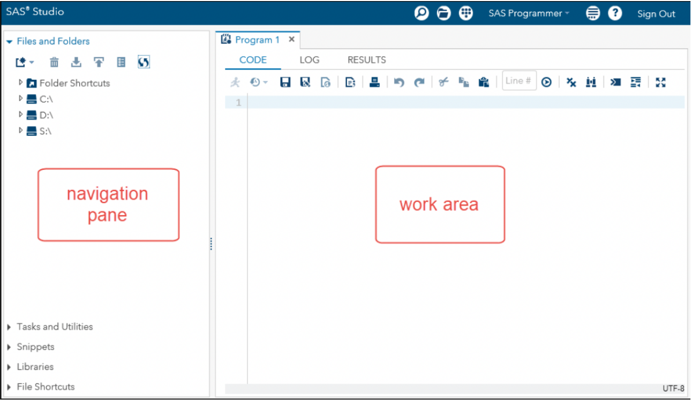
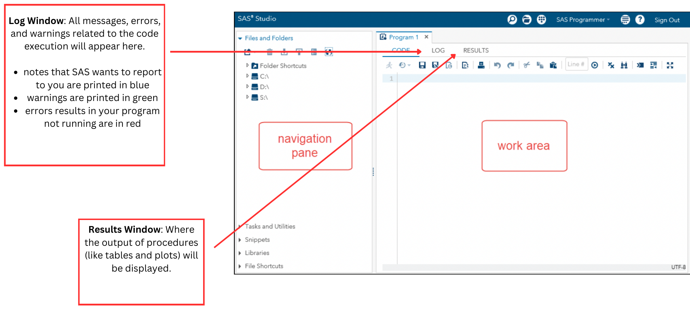

Agenda
- Course syllabus
- Project
- SAS Studio interface
- SAS basics and fundamentals
Course syllabus
Office hours: online, by appointment. Please email me!
Assignments and grade percentage
| 4 homework assignments |
70% |
| Final project |
30% |
Late work policy
All assignments are expected to be submitted by the due date. Late submissions are discouraged, since they can affect your learning progress and how quickly you get feedback.
| 1–2 days |
10% reduction |
| 3–7 days |
20% reduction |
| More than 1 week |
Not accepted, unless prior arrangement has been made |
Final project
This is an individual project that uses the skills and techniques you learn in this course.
- Each student will acquire a dataset and formulate a question or hypothesis.
- You are expected to obtain, clean, manipulate, and visualize the data to develop a conclusion from the dataset.
Record each step of your process and your reasoning for it:
- Data cleaning techniques
- Outlier techniques
- Encodings
- Visualizations used
- Statistical tests
This project accounts for 30% of your final grade.
Final project: data requirements
- Dataset approval must be submitted by November 9, 2026.
- Submissions are due December 10, 2026 and should include:
- Dataset (raw)
- SAS code
- Presentation slides
Setting up SAS
SAS Studio is free for students through SAS OnDemand for Academics.
- Go to SAS OnDemand for Academics and click Access Now.
- Click Sign in, then Don’t have a SAS profile?, then Create Profile.
- Fill out the required fields. Use your gotriton or triton email for academic access.
- Agree to the terms at the bottom of the page and create a password.
- Return to the SAS OnDemand page, sign in, and register with United States as your region.
- Wait for a confirmation email. This can take a while!
- Sign in again with your credentials. You now have access to SAS Studio.
Button names on the SAS site may change slightly over time. The full guide is on Moodle.
What is SAS?
SAS (Statistical Analysis System) is a comprehensive software suite for advanced data analysis, business intelligence, data management, and predictive analytics.
It is widely used in industries like healthcare, finance, government, and education for tasks such as data mining, statistical modeling, and report creation.
What is SAS Studio?
SAS Studio is a development application that runs and processes SAS code on a cloud server. You can access it through any web browser, so there is nothing to install.
The SAS programming process
Access
data
Explore
data
Prepare
data
Analyze and report on data
Export
results
SAS Studio interface

- Navigation pane (left): files and folders, tasks, snippets, libraries
- Work area (right): where you write and run your programs
Code, Log, and Results tabs

Example SAS code
/* This code creates a dataset called "example"
and prints out the SAS table */
Multi-line comments: /* … */
Single-line comments: * … ;
data example;
input name $ age height;
datalines;
Alice 30 5.5
Bob 25 6.1
;
run;
proc print data=example;
run;
A SAS program is a sequence of steps
A SAS program is a sequence of steps: any combination of DATA and PROC (procedure) steps.
/* This code creates a dataset called "example"
and prints out the SAS table */
data example;
input name $ age height;
datalines;
Alice 30 5.5
Bob 25 6.1
;
run;
DATA STEP
DATA steps typically read, process, or create data.
proc print data=example;
run;
PROC STEP
PROC steps typically report, manage, or analyze data.
This program has 2 steps (1 DATA and 1 PROC).
Where steps begin and end
/* This code creates a dataset called "example"
and prints out the SAS table */
data example;
input name $ age height;
datalines;
Alice 30 5.5
Bob 25 6.1
;
run;
proc print data=example;
run;
Steps begin with either DATA or PROC.
Steps end with RUN; (some procedures end with QUIT;).
Try it: run the example
Copy this program into SAS Studio and click Run. The table appears in the Results tab.
/* This code creates a dataset called "example"
and prints out the SAS table */
data example;
input name $ age height;
datalines;
Alice 30 5.5
Bob 25 6.1
;
run;
proc print data=example;
run;
A second example
This program copies the sashelp.class table into a dataset called myclass, calculates height in centimeters, and computes means.
/* This code sets the sashelp.class table into a
dataset called myclass, calculates height in cm,
and also provides means */
data myclass;
set sashelp.class;
heightcm = height*2.54;
run;
proc print data=myclass;
run;
proc means data=myclass;
var age heightcm;
run;
The Print Procedure
| Alfred |
M |
14 |
69.0 |
112.5 |
175.260 |
| Alice |
F |
13 |
56.5 |
84.0 |
143.510 |
| Barbara |
F |
13 |
65.3 |
98.0 |
165.862 |
| Carol |
F |
14 |
62.8 |
102.5 |
159.512 |
| Henry |
M |
14 |
63.5 |
102.5 |
161.290 |
| James |
M |
12 |
57.3 |
83.0 |
145.542 |
| Jane |
F |
12 |
59.8 |
84.5 |
151.892 |
| Janet |
F |
15 |
62.5 |
112.5 |
158.750 |
| Jeffrey |
M |
13 |
62.5 |
84.0 |
158.750 |
| John |
M |
12 |
59.0 |
99.5 |
149.860 |
| Joyce |
F |
11 |
51.3 |
50.5 |
130.302 |
| Judy |
F |
14 |
64.3 |
90.0 |
163.322 |
| Louise |
F |
12 |
56.3 |
77.0 |
143.002 |
| Mary |
F |
15 |
66.5 |
112.0 |
168.910 |
| Philip |
M |
16 |
72.0 |
150.0 |
182.880 |
| Robert |
M |
12 |
64.8 |
128.0 |
164.592 |
| Ronald |
M |
15 |
67.0 |
133.0 |
170.180 |
| Thomas |
M |
11 |
57.5 |
85.0 |
146.050 |
| William |
M |
15 |
66.5 |
112.0 |
168.910 |
The Means Procedure
Steps vs. statements
/* This code sets the sashelp.class table into a
dataset called myclass, calculates height in cm,
and also provides means */
data myclass;
set sashelp.class;
heightcm=height*2.54;
run;
proc print data=myclass;
run;
proc means data=myclass;
var age heightcm;
run;
This program has 3 steps (1 DATA step and 2 PROC steps).
Most statements (not steps) begin with a keyword, and all statements end with a semicolon.
General SAS statement rules
- All SAS statements (except lines of data) must end with a semicolon.
- SAS statements begin with a SAS keyword, such as
TITLE, DATA, INPUT, DATALINES, RUN, PROC, and VAR.
- SAS statements are not case-sensitive. You can type code in all caps, all lowercase, or a mix of both.
- Words in SAS statements are separated by blanks or special characters (such as
=, +, or *).